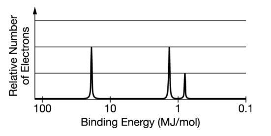

Moles and Molar Mass
6.02 × 10²³ is the number of particles (or things) in a mole.
Given 1 mol of two different substances, it is possible for them to have different weights because the particles in each may have different masses.
Given a chemical formula, such as C₁₂H₂₂O₁₁, you can determine the mass of each individual atom by multiplying the number of atoms by its atomic mass:
- 12C × 12.01 g/mol = 144.12 g of Carbon
- 22H × 1.01 g/mol = 22.22 g of Hydrogen
- 11O × 15.999 g/mol = 176.00 g of Oxygen
The molar mass for the entire C₁₂H₂₂O₁₁ compound is the sum of each part:
144.12 g C + 22.22 g H + 176.00 g O = 342.3 g of C₁₂H₂₂O₁₁
Molar mass is used to convert between moles and grams of a substance. The ratio can be used either way to convert:
| 0.85 mol of C | 12.01 g of C | 10.2 g of C |
| 1 | 1 mol of C |
| 10.2 g of C | 1 mol of C | 0.85 mol of C |
| 1 | 12.01 g of C |
Check Your Understanding:
Try this quick quiz to reinforce what you just learned about molar mass and particle count.
How many moles are in 45.68 g of Sodium (Na)?
What is the molar mass of Calcium Carbonate (CaCO₃)?
Mass Spectra of Elements
Mass spectra is used to identify the isotopes of an element and their relative abundances. An isotope is a variation of an element by the number of neutrons in the atom. This variation in neutrons in the nucleus of an element is why some isotopes of the same element have different weights

Example: In the periodic table above, Cl is present in two isotopes: Cl-35 and Cl-37. The ratio of Cl-35 to Cl-37 is roughly 3:1, which is why the atomic mass shown on the periodic table is 35.45g

Example: With the graph of an unknown element like the one shown above, we can estimate two whole numbers the average mass will fall between based on their relative abundances. Above, a large portion of the element has an isotope at 90 amu, but also has a small amount around 94 and 96 amu. When averaged out we would estimate the avergage atomic mass to be around 91 or 92 amu, which looking on the periodic table we can see is closest to the element Zirconium (Zr) which is 91.22 amu
Check Your Understanding:
Try this quick quiz to reinforce what you just learned about mass spectra.
An unknown element occurs naturally in three weights: 20, 21, and 22 amu, in the relative abundances of 90.48%, 0.27%, and 9.25%, respectively. Identify the element
Elemental Comparison of Pure Elements
All pure substances (both elements and compounds) have fixed composition, meaning that the elements present and the ratio of those elements is the same in every sample of the substance
Ex.Every sample of NaCl has a 1:1 ratio of Na to Cl atoms
The fixed ratio also applies to the mass of the pure substance
Ex. Every sample of NaCl has 39.34% of its mass made up of Na and 60.66% made up of Cl
The percent composition of an element in a compound is the weight of the element over the weight of the entire compound
Ex. Na/NaCl → 22.99/58.44 → 39.34% of NaCl mass is made of sodium
Theoretically, two different compounds can have the same composition by mass if they are in the same ratio, for example, NO₂ and N₂O₄ have the same composition by mass
An empirical formula is the simplified ratio for a compound with the lowest value of whole number subscripts for each atom while maintaining the same ratio. Following on from the example above, the empirical formula for N₂O₄ would be the compound NO₂ , given it maintains the same ratio of atoms and cannot be reduced further.
The N₂O₄ formula would be a chemical or molecular formula - a formula representing a different compound, but not the most simplified form. NO₂ may be considered both an empirical and molecular formula.
To determine the empirical formula of a compound based on its percent composition, you can first convert the g of each atom to moles (if the percent composition is given by percentage, simply replace the percent with grams). After determining the number of moles for each atom, divide each value by the lowest number of moles.
This results in values for each atom very close to a whole number (multiply all the values by a common value if needed to get all values to a whole number), which represents the molecular (chemical) formula. From this, the empirical formula can be determined as normal.
This can also be applied to combustion reactions where H₂O is removed from a hydrated substance via combustion to produce an anhydrous substance (without water). Finding the moles of water and the substance will allow you to find the molecular formula for the reaction.
Check Your Understanding:
Try this quick quiz to reinforce what you just learned about elemental composition.
A scientist has a pure sample of Calcium Oxide (CaO). What is the percent composition of Oxygen in Calcium Oxide?
C₆H₁₂O₆ is the chemical formula for glucose. What is the emperical formula of glucose?
A compound is measured to consist of 25.0% Hydrogen and 75.0% Carbon. What is the emperical formula of the measured compound?
A compound was analyzed and found to be composed of 48.0% Carbon, 4.0% Hydrogen, 22.4% Nitrogen, 12.8% Sulfur, and 12.8% Oxygen. The compound also was found to have a molecular mass of 500 amu. Determine the molecular formula for the compound
Composition of Mixtures
Mixtures contain more than one pure substance, and may have variable amounts of the pure substances that compose them. Solutions are examples of mixtures - keeping in mind that M (Molarity) = (moles of solute) / (Liters of solution)
* Note that while two different atoms combined together would be classified as a mixture, if the atoms are forming a molecule and are not separated in the mixture, there is only a pure substance made up of the compound. Diatomic elements (ex O2) would therefore also be classified as a pure substance when alone.
The elemental composition of a mixture can be used to determine the relative amounts of the pure substances that make it up through elemental analysis. This determines how pure a substance is.
Ex. A 2.4g sample of a mixture of CaCl2 and NaCl contains .12g of Na, what percent of the sample is NaCl?
First convert to moles of Na, then convert to moles of NaCl, and finally convert to grams of NaCl. This results in .305g of NaCl (.12g Na / 22.99g Na per mol * 1 mol Na per 1 mol NaCl * 58.44g NaCl per mol NaCl) , and therefore about 13% of the sample of the mixture is NaCl (.305/2.4 = 12.7 --> about 13%)
Check Your Understanding:
Try this quick quiz to reinforce what you just learned about composition of mixtures.
A 21.8g sample of ZnO and MgO contains 1.32g of Zn. What percent of the sample is MgO?
Atomic Structure and Electron Configuration
Recall the Structure of an Atom:
Atoms contain a positively charged nucleus (made up of positively charged protons and neutral charged neutrons) and are surrounded by negatively charged electrons which are organized into valence shells
Coulomb's Law is used to calculate the force between two particles:
F = K (q₁ · q₂ / r²)
Where q₁ and q₂ are the electrical charges of the respective particles, and r is the distance between the nuclei of the particles. A negative F represents attraction (since the charges would be opposite), whereas a positive F represents repulsion (since the charges would be the same sign). A higher magnitude of charges will result in stronger force, as will a smaller radius between the particles.
Coulomb’s Law may be used to predict the ionization energy of an atom, or the amount of energy required to remove an electron from the atom. Know that larger atoms will have a greater magnitude of positive change in the nucleus (resulting in more energy required to remove an atom), as well as the fact that as electrons get further out from the nucleus (such as in later valence shells) the attraction to the nucleus will be weaker and thus less energy will be required to remove the electron.
Check Your Understanding:
Try this quick quiz to reinforce what you just learned about atomic structure and electron configuration.
Which of the following elements will form a bond with the strongest Coulombic attractions when bonded with Cl?
According to Coulomb's Law, what explains why Sodium (Na) has a stronger attraction to Chlorine (Cl) than Potassium (K)?
Photoelectron Spectroscopy
Electron configuration refers to the organization of electrons into shells (energy level) and subshells
Ex. in 3p⁶ the 3 represents the energy shell/level while the p represents the subshell/sublevel. The 6 signifies there being 6 electrons in the subshell.
According to the Aufbau Principle, electrons fill the lower energy levels first before filling the higher ones:
--> 1s² 2s² 2p⁶ 3s² 3p⁶ 4s² 3d¹⁰ 4p⁶ 5s² 4d¹⁰ 5p⁶ 6s² 4f¹⁴ 5d¹⁰ 6p⁶ 7s² 5f¹⁴ 6d¹⁰ 7p⁶ 8s² -->
Photoelectron Spectroscopy uses high energy radiation to remove electrons from an atom (valence electrons will always be easier to remove than core electrons)
- In a Photoelectron Spectroscopy (PES) graph, the nucleus can be considered to be at the intersection of the axis
- The relative height of the peaks represents the electrons in each shell
- Peaks closer to the nucleus (with more binding energy) take more energy to remove, peaks further out (with less binding energy) will require less energy
- The peaks can be read to correspond to an element’s electron configuration
Check Your Understanding:
Try this quick quiz to reinforce what you just learned about photoelectron spectroscopy.
What is the correct electron configuration of Nitrogen (N)?
Identify the element shown and the number of electrons on the rightmost peak
Periodic Trends
Periodicity refers to the repetitive patterns that occur in the periodic table - these allow accurate predictions to be made regarding atomic properties when no specific information is given:
- Atomic Radii:
- The atomic radius is greater as you move down the periodic table because additional electrons occupy extra valence shells
- Radius is greater as you move left on the periodic table because all electrons occupy the same shell, but there is a lesser degree of charge on the further left elements, resulting in slightly greater radii
- This largely corresponds with Coulomb's Law
- Ionization Energy:
- Ionization energy is the energy required to remove an electron from an atom, and is closely related to atomic radii
- Larger atomic radii (left and down on the periodic table) results in weaker attraction between the nucleus and electrons - thus there is a low ionization energy
- Smaller atomic radii (right and up on periodic table) results in stronger attraction between the nucleus and electrons - thus there is a high ionization energy
- Ionization increases right and up on the periodic table, decreasing left and down
- Electronegativity:
- The ability of an atom in a molecule to attract shared electrons to itself - again tied to the atomic radii trend
- Noble gasses do not share atoms in a molecule and thus do not have electronegativity values
- Smaller electronegativity (less attraction of electrons in a molecule) left and down on periodic table
- Higher electronegativity right and up on periodic table: lots of attraction towards shared electrons in a molecule (F is most electronegative)
- Electron Affinity:
- The energy charge when an atom gains an electron to form a negatively charged ion: either endothermic or exothermic
- The stronger attraction a nucleus has to valence electrons makes electron affinity more negative (non-metals generally negative, metals are positive)
- Electron affinity roughly increases right and up on the periodic table (difficult to determine for metals and group 2/18)
Check Your Understanding:
Try this quick quiz to reinforce what you just learned about periodic trends.
Which of the following elements has the smallest atomic radius?
Identify the element with the highest first ionization energy
Which of the following molecules contains the most polar bond? (Hint from unit 2: A bond is more polar - or shares electrons more unequally - when there is a high difference in electronegativity between the atoms bonding)
What element has the lowest electron affinity (most negative)?
Valence Electrons and Ionic Compounds
Valence electrons are the outer shell electrons (in the S and P subshells), and typical charges of atoms in ionic compounds are determined by their location on the periodic table:
Group 1: +1
Group 2: +2
Group 13: +3
Group 15: -3
Group 16: -2
Group 17: -1
The charges for each group can be used to predict how elements will bond in ionic compounds. Ionic compounds will tend to have zero net charge so it is important to use subscripts if necesary to balance charges
Ex. Na and Cl bond in a 1 to 1 ratio (NaCl) because the -1 and +1 charge cancel each other out, but if Cl were to bond with Mg it would do so in a 1:2 ratio (MgCl₂) because 2 charges of -1 from Cl cancel with the +2 from Mg
Check Your Understanding:
Try this quick quiz to reinforce what you just learned about valence electrons and ionic compounds.
A student reacts a pure element, X, with Oxygen. Which of the following choices represents the possible molecule formed from this reaction
An ionic compound formed partly of Potassium (K) has the formula K₂X, where X is an unknown element. Which choice could be the element represented by X?